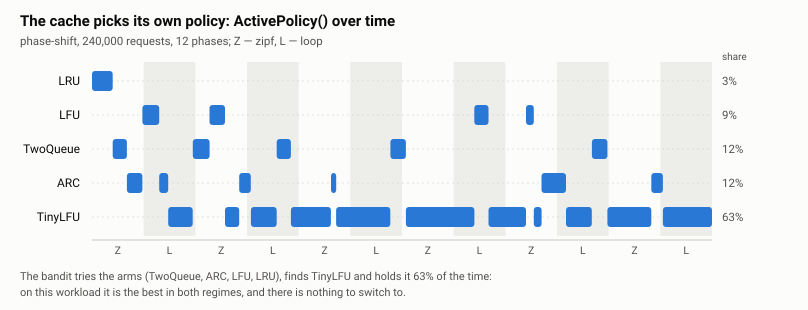

Adaptive Selection Cache · Go
Stop guessing your cache eviction policy. Measure it.
as-cache runs several eviction policies at once. One is active and serves every request; the rest run as shadows that see each key, never its value, and answer "would I have had this?" Once per epoch a multi-armed bandit compares their hit rates and switches to the winner, if the win is worth the migration.
How it works
Per request
The active policy stores real values and serves the caller. A shared sampler gates the shadow fan-out, so shadows track a miniature of the same substream and cost stays flat in the number of policies.
Per epoch
Every arm reports its hit rate over the same sampled substream, so each carries equal, honest evidence. The bandit updates its posteriors and names a winner.
On switch
Stability gates filter out noise wins; a migration strategy (cold, warm, or gradual) moves data so a switch never serves a shadow's placeholder as a real value.
Watch the bandit decide

Open the interactive explorer → Scrub a 240,000-request phase-shift run and see what the bandit knew at each epoch and why it switched.Quick start
go get github.com/sshaplygin/as-cache
go get github.com/sshaplygin/as-cache/policies
go get github.com/sshaplygin/as-cache/banditlru, _ := policies.NewLRU[string, int](10000)
twoQ, _ := policies.NewTwoQueue[string, int](10000)
cache, err := ascache.NewAdaptiveCache(
[]ascache.Policy[string, int]{lru, twoQ},
bandit.NewThompson(0.9, 1), // discount, seed
&ascache.Settings{EpochDuration: time.Minute, ShadowSampleRate: 0.05},
)
if err != nil {
return err
}
defer cache.Close()
cache.Add("k", 1)
v, ok := cache.Get("k")
Prefer measurement without the switching? ObserveOnly mode
guarantees the cache behaves exactly like the policy it was built with,
while Advice() reports which policy would win and by how
much — see
advisor mode.
Policies
| Policy | Constructor | Notes |
|---|---|---|
| LRU | policies.NewLRU | via hashicorp/golang-lru/v2 |
| LFU | policies.NewLFU | native O(1) implementation |
| 2Q | policies.NewTwoQueue | scan-resistant |
| Random | policies.NewRandomPolicy | the control arm worth beating |
| TTL | policies.NewTTL | expiry as well as recency |
| ARC | arc.NewPolicy | separate module — patented by IBM |
| W-TinyLFU | tinylfu.NewPolicy | separate module; the strongest baseline |
What the evidence says
Every claim below comes from a reproducible replay against published traces, not from intuition — the full tables are in docs/evidence.md.
| Finding | Numbers |
|---|---|
| No single policy wins everywhere. The best fixed policy changes by trace, and the strongest baseline can land near the bottom. | 2Q wins Twitter and OLTP; W-TinyLFU wins ARC P3 and LIRS — and is second-worst on OLTP |
| Tuned sensibly, adaptive selection tracks the best fixed policy without being told which one it is. | within ~1 point on most traces; beats the best fixed policy on P3 by 0.76 |
| The real product is a bound on the cost of guessing wrong. | 77.5% vs LRU's 0.0% on the loop workload |
| Shadows hold keys and bookkeeping, never values, so memory does not multiply by the policy count. | 6 policies cost 2.65x one LRU; 1.32x with sampling |
| The adaptive layer is not free on the hot path. | 32 ns/op bare LRU vs 82 sampled, 618 unsampled |
When to use it
Use it when
- You do not know which policy suits your traffic, and cannot easily find out.
- Your traffic changes shape and you would rather not re-tune.
- You want the measurement more than the switching — advisor mode gives you that at zero risk.
Skip it when
- You have already measured your traffic and know which policy wins. Use that policy directly.
- The hot path is latency-critical at single-digit nanoseconds.
- You need a hard memory ceiling, or cannot give it enough traffic per epoch to measure anything.
- Your keyspace fits in the cache — every policy scores the same when nothing is evicted.
Documentation
| Design | How it works per request and per epoch, the Bandit interface, what is not done |
| Configuration | Every Settings field, migration strategies, sampling, stability gates, tuning |
| Policies | The ready-made arms, ARC's patent split, W-TinyLFU's caveats |
| Advisor mode | ObserveOnly, Advice(), and the metrics module |
| Evidence | Every measured claim: policy tables, real traces, sampling fidelity, fleets |
| Benchmarking | Reproducible replays, benchclient, make evidence |
| Running a fleet | Pooling evidence across replicas through Valkey or Redis |